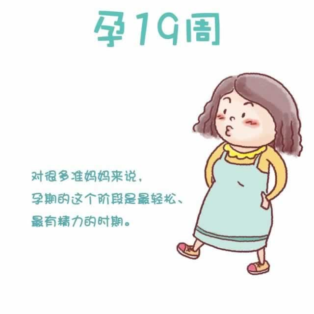

你的孕期已经过半，恭喜！
现在，子宫的顶部已基本和肚脐平行，你的体重将会以每周大约0.45千克的速度持续增加。由于子宫增大，腹部向外膨胀，压迫到盆腔静脉，使得下肢静脉回流不畅，所以最近你的双腿可能会开始出现水肿。脚背、内外脚踝都是水肿的常见部位。一般来讲，早上的水肿比较轻，下午和晚上则会加重。穿舒服、宽松的鞋子，可以避免浮肿部位受到挤压。在休息时，可以将脚放在凳子上，使它高过臀部。尽量不要长时间站立，站立时可以经常轮换一下两脚的重心，以促进血液流通，减少水肿的发生。
随着孕期的推进，你的睡眠也在发生着一些改变。你开始在睡觉时打鼾，这是荷尔蒙变化引起的鼻部通道水肿造成的。采用侧卧姿势，睡觉时将头垫高会感觉好些。因为肌肉拉伸，你还可能在睡熟时出现腿部抽筋。使劲伸直你的腿，将脚也伸直用力往回扳动脚趾，会有效缓解抽筋。